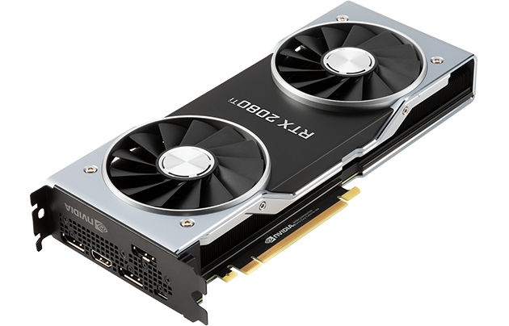

Hace solo unops días que Nvidia ha presentado sus nuevas gráficas RTX Turing. Según la compañía, por los datos a los que se refirió en este evento, la nueva GeForce RTX 2080 es ‘seis veces más rápida’ que las GTX 10 Series, basadas en Pascal. ¿Cómo lo han conseguido? Entre otras cosas, gracias a la tecnología Ray Tracing, un ‘nuevo modelo’ de computación que permite el cálculo complejo de iluminación de manera mucho más veloz. Sí, son más rápidas, pero ¿seis veces más rápidas que las anteriores?.
NVIDIA presentó la GeForce RTX 2080 Ti con una
hoja de especificaciones técnicas –para la Founder’s Edition- en la cual están
Lo que no nos dijeron es la ‘potencia’ de esta gráfica en teraflops, aunque el cálculo sale en 14,2 TFLOPsaproximadamente. La generación anterior, la GTX 1080 Ti, alcanzaba hasta los 11,3 TFLOPs, mientras que la Titan XP llega hasta 12,15 TFLOPs; es decir, que se ha aumentado la ‘potencia’ en un 17% respecto a la gráfica más rápida, y un 26% frente a la generación anterior.
No obstante, la memoria GDDR6 supone un rendimiento un 23% superior por su velocidad, lo que debería suponer un importante impacto positivo sobre el rendimiento en la ejecución de videojuegos. La cuestión, en todo caso, es que las diferencias en el ‘mundo real’ no van a ser tan grandes como prometió NVIDIA, al menos, hasta que los videojuegos se adapten a las nuevas tecnologías incorporadas en estas Series 20.
El NVLink es el nuevo conector de la compañía para conectar varias tarjetas gráficas entre sí, por lo que SLI desaparece. Este nuevo conector mejora al SLI en todos los aspectos. Por ejemplo, con él las tarjetas pueden combinar la memoria entre sí, haciendo que las tarjetas trabajen mejor de manera conjunta entre sí en lugar de que cada una renderice una parte de la imagen como ocurría con SLI. El precio de la pieza para unir 3 tarjetas será de 84,99 euros., y es 50 veces más rápido que el SLI actual.
El resto de características están presentes en las tarjetas actuales, como las compatibilidad con DirectX 12, NVIDIA Ansel, VR, G-Sync, HDR, Shadowplay, descodificación de HEVC, etc.
El precio de la versión Founders Edition de la RTX 2080 Ti es de 1.259 euros en España, y estará a la venta el 20 de septiembre. Las reservas arrancan hoy.